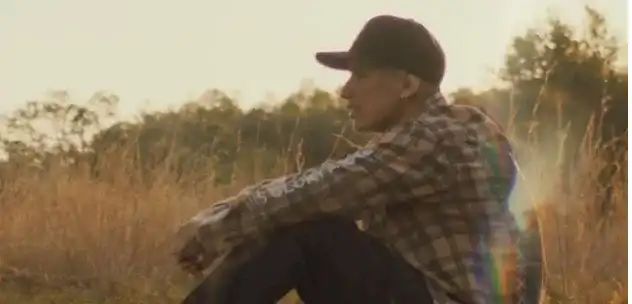
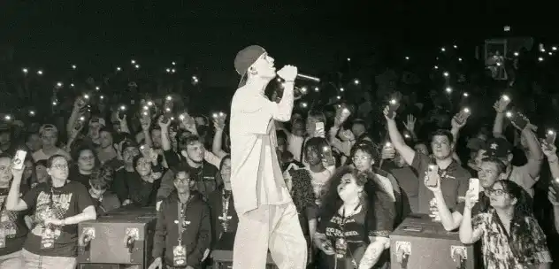

Une période sombre
« Feels like I spent my whole life Tryna be someone who I'm not inside »
Ayant grandi à l’église toute sa vie, Sam participait aux chants du culte dès ses 15 ans, mais pour lui, ce n'était jamais une véritable louange. Au bout d’un moment, il détestait chanter à l'église et faisait tout pour éviter ces moments. Sam voyait beaucoup de miracles autour de lui mais n’avait jamais rien expérimenté lui-même avec Dieu. Il a donc commencé à remettre sa foi en question, puis, au lycée, il a arrêté de croire en Dieu et a connu de mauvaises fréquentations.
« This pleasure is poison I’m high then I’m falling Everytime it leaves me low »
Sam a ensuite développé une dépression et il a commencé à consommer des drogues pour s’évader de la réalité. Il avait l’impression de n’avoir aucun but sur cette terre, mais en plus, il se sentait très honteux d’avoir un tel comportement, tout en étant le fils d’un pasteur. Puis il a commencé à avoir une nouvelle addiction : l’automutilation. Mais Sam ne s’est pas arrêté là, puisqu’il a également tenté de se suicider deux fois.
« I was playing with fire Said I’m fine but I lied »
Lorsque sa mère et son frère ont appris qu’il se mutilait, ils ont pleuré et étaient tellement bouleversés, c’était très difficile pour Sam de les voir dans cet état. Par la suite, il mentait à sa famille, leur disant qu’il allait mieux.
La délivrance

« I gotta let go it’s causing pain inside It’s all that I know, yeah, I’m losing my mind I know that I’ll die if you’re not by my side »
Un jour, Sam était seul à la maison, et alors qu’il était sur le point de se suicider avec une lame de rasoir, le piano poussiéreux de sa chambre a attiré son attention, comme si quelque chose y brillait, alors qu’il faisait pourtant sombre. Il a donc commencé automatiquement à jouer et chanter un titre de Todd Dulaney : Victory Belongs to Jesus. Jamais il n’avait rendu un culte ainsi, et il a ressenti une paix immense, un amour inconditionnel qu’il n’avait jamais ressenti auparavant. Il en pleurait, et c’est là qu’il a été délivré de tout par Jésus : de la dépression, de la toxicomanie, de l’automutilation et du suicide. Depuis ce jour, il ne cesse de grandir spirituellement, et le culte est devenu pour lui comme une addiction, un moment d’évasion où il peut courir à chaque fois, qu’il soit heureux ou triste. Sa vie a été complètement transformée, il a donné pleinement sa vie à Christ.
Une vie nouvelle
Aujourd’hui âgé de 22 ans, Sam Rivera travaille de sa passion. Avec la musique, il peut exprimer ses émotions, il écrit des chansons sur ce qu’il a traversé et souhaite motiver les jeunes à se rapprocher de Christ. Il y a, sur ses bras, 27 cicatrices qu’il s’est faites en se mutilant. Sam les a couvertes de tatouages avec des versets bibliques, ce sont comme des rappels afin de ne plus jamais recommencer. Let Go parle donc de lâcher prise, d’un homme souffrant de nombreux vices qui a donné sa vie à Dieu et qui a été totalement transformé en le louant.